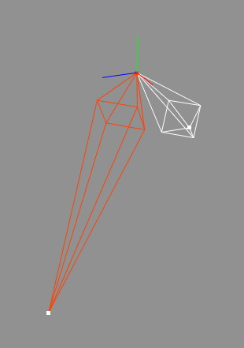

Orient Joint Tool
The orient joint tool helps to orient the local rotation axes of a joint. It is often desirable that one axis of the local rotation axes is pointing along a bone and that a second axis is pointing sideways to the bones (see second image). If the local axis are oriented that way it is easier to perform forward kinematics. But it is also easier to set joint constraints. Last but not least do oriented joints interpolate better in the F-Curve editor since it is often sufficient that such one component of the rotation vector is animated. Unluckily the local axes of the joints are usually not oriented but for this case Cheetah3D offers the orient joints tool.
The orient joint tool can be applied in to modes:
- Without Second Axis: If the Second axis property of the orient joint tool is set to None the new orientation is solely determined by the Orientation property and the two bones between which the joint is. The Orientation specifies in which directions the local rotation axes point. Hereby the first axis always point along the bone leaving the joint. The third axis is pointing sideways to the two bones and the second axis is perpendicular to the first and the second axis.
For example if you chose a YXZ orientation. Then the first axis is the Y (YXZ). It will point along the bone. The third axis is the Z (YXZ) which points sideways to the bones. Finally the second axis the X (YXZ) which is perpendicular to the first (Y) and the third (Z) axis.
- With Second Axis: If the Second axis property is anything else then None then local rotation axes are orientated slightly different. In this case the first axis still points along the bone. But the second axis points along the axis chosen with the Second axis property and the third axis is perpendicular to the first and the second axis.
 
On the left image you can see two bones with unoriented joint. After applying a XYZ orient with no second axis
the X-Axis is pointing along the bone and the Z axis is pointing sideways two the two bones.
Modes
This tool works in all modes equally.


To use the orient joint tool just select "Tools CharacterOrient Joint" from the menu. The orient joint tool will now show up in the tool properties and you can set the desired properties. Once finished click on the OK button and the tool is applied to the currently selected joint.
CharacterOrient Joint" from the menu. The orient joint tool will now show up in the tool properties and you can set the desired properties. Once finished click on the OK button and the tool is applied to the currently selected joint.
Keys
- none
Properties
- Orientation: Determines the order in which the local axes are oriented.
- Second axis: Determines if a second axis is used for orientation. The second axis is always given as a global coordinate system axis.
- Hierarchy: Check this on if you want to orient the joints of a whole hierarchy.
- Apply: Clicking onto the OK button apply the tool to the currently selected joint.